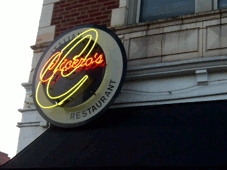

St. Louis Restaurant Guide for Students
Our Guide features 20+ affordable restaurants throughout the St. Louis area.
To access the restaurant pages, see 'Search by Area', 'Search by Theme' or 'Chain Restaurants' in the menu bar above.
To access nutrition information, including information on key nutrients, the best nutritional options in this guide, and tips on choosing healthier menu items, see the 'Nutrition' link in the menu bar above.
We have created a St. Louis restaurant guide that is intended to address many of the common food choice concerns of college students, including cost, convenience, taste, dietary restrictions, and health. We address these concerns in the following ways:
Cost: Prices of menu items are all around $10 or less (many options are available for around $7).
Convenience: Restaurants are organized by location so students can find restaurants in their area if they are looking for somewhere close. Also, we have included many restaurants that have takeout or drive-thru available for busy students that need food available in a short amount of time. These options are listed on the restaurant pages, where available.
Taste: We have provided a wide variety of restaurants suitable to many different taste preferences. To choose a restaurant by type, visit the 'Search by Theme' menu, located in the title bar.
Dietary restrictions: We have listed menu options on our restaurant pages (where available) for common dietary restrictions throughout our guide, such as vegetarian and gluten intolerance.
Health: There are many restaurants in our guide that have good choices available for health-conscious students. Also, we have included a nutrition page accessible in the menu bar for information on key nutrients, the best healthy options in our guide, and general tips on choosing healthier menu items.
Lauren Noel
Amanda Mitchell
Jason Williams